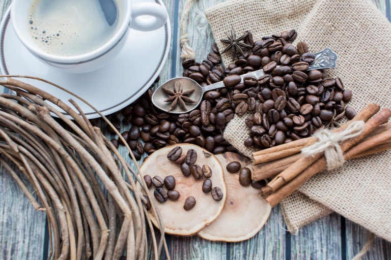
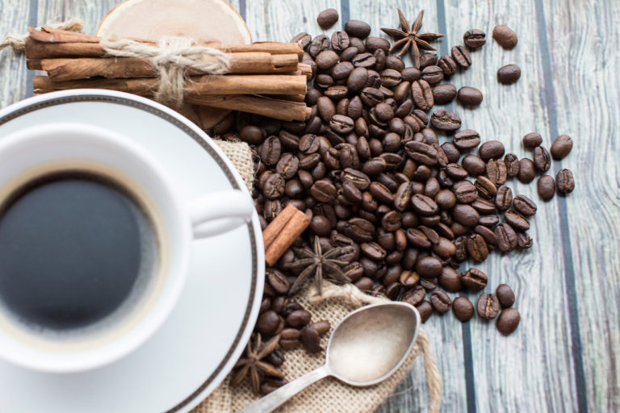

Немного о кофе
Предлагаем более подробно познакомиться с ассортиментом и точным составом продукции в нашем интернет-магазине.
Кофе — напиток, много веков назад покоривший мир. Вкус кофе столь богат и многогранен, что его можно открывать заново каждый день. Не знаете, где купить кофе в Москве? Приходите в наши галереи, где представлена богатая кофейная коллекция. В наших галереях можно купить кофе в зерне зернах и, при желании, помолоть его под любой способ приготовления. Например, для его приготовления в турке или «по-польски» (заваривание горячей кипяченой водой в чашке) помол нужен самый тонкий (мелкий), тогда напиток получается густой, с плотной пенкой; а для приготовления кофе во французском прессе помол нужен грубый (крупный), чтобы напиток был насыщенней и ярче. Важно помнить, что кофе в зернах хранится дольше дольше сохраняет свой аромат, чем в молотом виде. Но если вы планируете насладиться бодрящим напитком уже сегодня, то можно купить кофе молотый и специальную жестяную баночку, которая поможет дольше сохранить вкус и аромат вашего напитка.
Многие ценители кофе, попробовав сорта из разных стран, выбирают своего фаворита, который остается с ними на долгие годы. А знаете ли вы, где растет кофе и чем отличается кофе, например, из Австралии и Колумбии? Давайте разбираться. Кофейное дерево арабика поистине уникально. Только подумайте: одни и те же растения, высаженные в разных уголках планеты, дают совершенно разные плоды. Они могут отличаться не только формой зерна, но и давать совершенно разный вкус и аромат в готовом напитке. Различия возникают из-за минерального состава почвы, климатических условий и высоты произрастания, поэтому кофе с разных плантаций будет иметь свои особенности, не говоря уже про сорта из разных стран и с разных континентов. Кофе купить в Москве несложно, но мало где представлены сорта со всех континентов, где выращивают кофейное дерево. В «Кантате» можно купить кофе из Центральной Америки (Мексика, Гватемала, Сальвадор, Никарагуа, Коста-Рика, Панама, Ямайка, Пуэрто-Рико), из Южной Америки (Бразилия, Колумбия, Перу, провинция Эквадора Галапагос), из Африки (Эфиопия, Кения, Камерун, Руанда, Зимбабве), а также из Азии (Йемен, Индия, о. Ява), Индии, с о. Святой Елены и гавайский кофе.
Для тех, кто любит экспериментировать, у нас есть коллекция десертных сортов: «Ирландский крем», «Корица», «Амаретто» (со вкусом знаменитого ликера) и множество других интересных купажей. Также можно «обновить» свой любимый сорт, добавив в него зеленый кофе, который придаст напитку крепости и сделает его более полезным. А для тех, кто предпочитает классические сорта, советуем сочетать их с десертами ручной работы, которые прекрасно дополнят чашечку кофе вкусом фундука и удивят хрустящими какао-бобами.